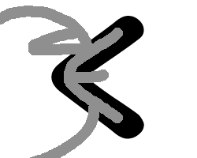

Hiragana ve Katakana başlıkta olduğu gibi genellikle birlikte kullanılırlar. Hiragana (ひらがな) Dersi(レスン).
Ders karakterlerine tek tek bakacak olursak レ - re, ス - su, ン - n yani "resun" olarak okunur. Şimdi sesli bir şekilde bunu tekrar edin.
İngilizce biliyorsanız kulağa "Lesson" kelimesini andırdığını farkedeceksiniz, İngilizce bilmiyorsanız benzerliği farketmemiş olabilirsiniz ancak en azından bir kelime Japonca öğrendiniz.
Başlamadan önce buradaki Japonca harflerin fazla havalı yazıldığını belirteyim görsellerdeki sade yazımların oldukça yeterli olduğunu bilmekte fayda var.
Hemen ilk karakterimize geçelim öyleyse
あ
Bu karakter "a" şeklinde okunur.
Tam ortasına dikkatlice bakarsanız Alfabemizdeki "A" harfine benzediğini görebilirsiniz. Aklınızda kalması için ilk sekiz karakterde bu şekilde mnemonic benzetmeler kullanacağım.
Diğer karakterlerde kendiniz benzetmelerde bulunabilir ya da iletişim kısmından eklemem için öneride bulunabilirsiniz.
İkinci karakterimiz
い
Bu karakter "i" şeklinde okunur.

Gördüğünüz üzere iki adet çizgiden oluşuyor ve içinde "2" var. Bunları farkettiğiniz zaman aklınıza "i" gelsin.
Üçüncü karakterimiz
う
Bu karakter "u" şeklinde okunur.

Bariz bir şekilde yan dönmüş "u" harfine benziyor. Buna benzer başka bir karakter daha var onun için bu karakteri tek seferde öğrenebilirseniz süper olur.
Dördüncü karakter
え
Bu karakter "e" şeklinde okunur.

Göld'e' yüz'e'n örd'e'ği görüyor musun? Ördeğin "e"si ? Biraz saçma oldu ancak anladığınızı düşünüyorum.
Beşinci karakter
お
Bu karakter "o" şeklinde okunur.
Ortasında iki adet "o" var.
Altıncı karakter
か
Bu karakter "ka" şeklinde okunur.
"k" harfini biraz anımsatıyor.
Yedinci karakter
き
Bu karakter "ki" şeklinde okunur.
Bu karakter bir anahtara benziyor. İngilizceden "key" aklınıza gelebilir.
Sekizinci karakter
く
Bu karakter "ku" şeklinde okunur.

Bu karakter bir kuşun gagasına benziyor. 'Ku'şun gagası.
Dokuzuncu karakter
け
Bu karakter "ke" şeklinde okunur.
Onuncu karakter
こ
Bu karakter "ko" şeklinde okunur.
On birinci karakter
さ
Bu karakter "sa" şeklinde okunur.
On ikinci karakter
し
Bu karakter "şi" şeklinde okunur.
On üçüncü karakter
す
Bu karakter "su" şeklinde okunur.
On dördüncü karakter
せ
Bu karakter "se" şeklinde okunur.
On beşinci karakter
そ
Bu karakter "so" şeklinde okunur.
On altıncı karakter
た
Bu karakter "ta" şeklinde okunur.
On yedinci karakter
ち
Bu karakter "chi" şeklinde okunur.
On sekizinci karakter
つ
Bu karakter "tsu" şeklinde okunur.
On dokuzuncu karakter
て
Bu karakter "te" şeklinde okunur.
Yirminci karakter
と
Bu karakter "to" şeklinde okunur.
Yirminci birinci karakter
な
Bu karakter "na" şeklinde okunur.
Yirminci ikinci karakter
に
Bu karakter "ni" şeklinde okunur.

Yirminci üçüncü karakter
ぬ
Bu karakter "nu" şeklinde okunur.
Yirminci dördüncü karakter
ね
Bu karakter "ne" şeklinde okunur.
Yirminci beşinci karakter
の
Bu karakter "no" şeklinde okunur.
Yirminci altıncı karakter
は
Bu karakter "ha" şeklinde okunur.

Yirminci yedinci karakter
ひ
Bu karakter "hi" şeklinde okunur.
Yirminci sekizinci karakter
ふ
Bu karakter "hu/fu" şeklinde okunur.
Yirminci dokuzuncu karakter
へ
Bu karakter "he" şeklinde okunur.
Otuzuncu karakter
ほ
Bu karakter "ho" şeklinde okunur.
Otuz birinci karakter
ま
Bu karakter "ma" şeklinde okunur.
Otuz ikinci karakter
み
Bu karakter "mi" şeklinde okunur.
Otuz üçüncü karakter
む
Bu karakter "mu" şeklinde okunur.
Otuz dördüncü karakter
め
Bu karakter "me" şeklinde okunur.
Otuz beşinci karakter
も
Bu karakter "mo" şeklinde okunur.
Otuz altıncı karakter
や
Bu karakter "ya" şeklinde okunur.
Otuz yedinci karakter
ゆ
Bu karakter "yu" şeklinde okunur.
Otuz sekizinci karakter
よ
Bu karakter "yo" şeklinde okunur.
Otuz dokuzuncu karakter
ら
Bu karakter "ra" şeklinde okunur.
Kırkıncı karakter
り
Bu karakter "ri" şeklinde okunur.
Kırk birinci karakter
る
Bu karakter "ru" şeklinde okunur.
Kırk ikinci karakter
れ
Bu karakter "re" şeklinde okunur.
Kırk üçüncü karakter
ろ
Bu karakter "ro" şeklinde okunur.
Kırk dördüncü karakter
わ
Bu karakter "wa" şeklinde okunur.
Kırkıncı beşinci karakter
を
Bu karakter "wo" şeklinde okunur.
Kırk altıncı karakter
ん
Bu karakter "n" şeklinde okunur.